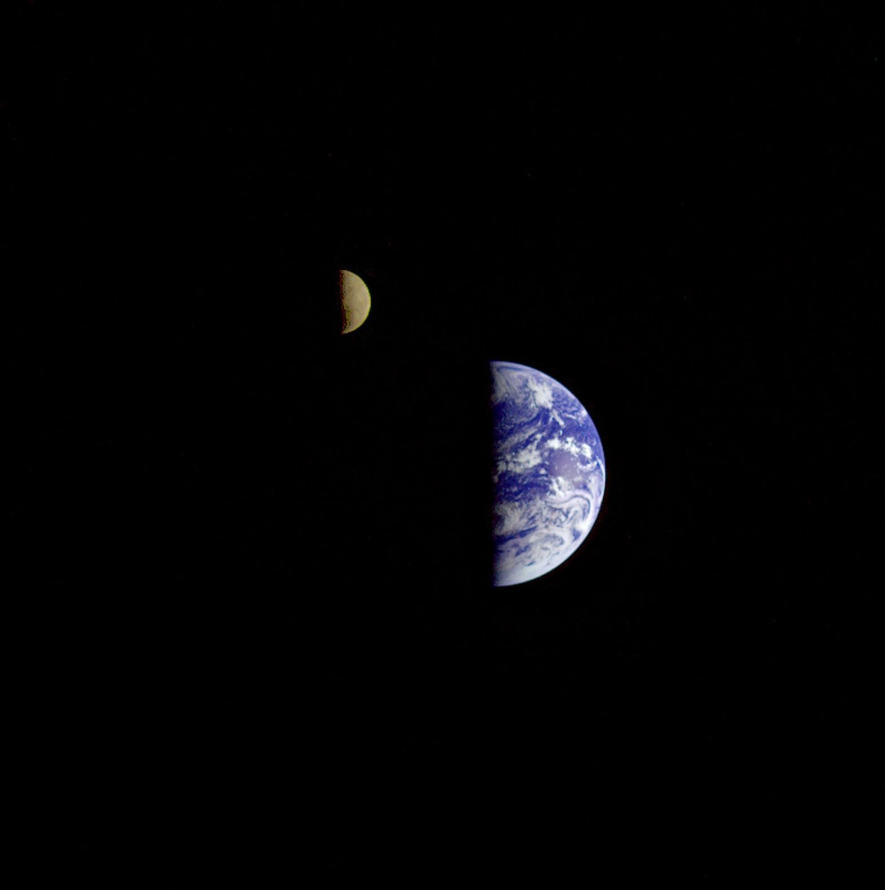
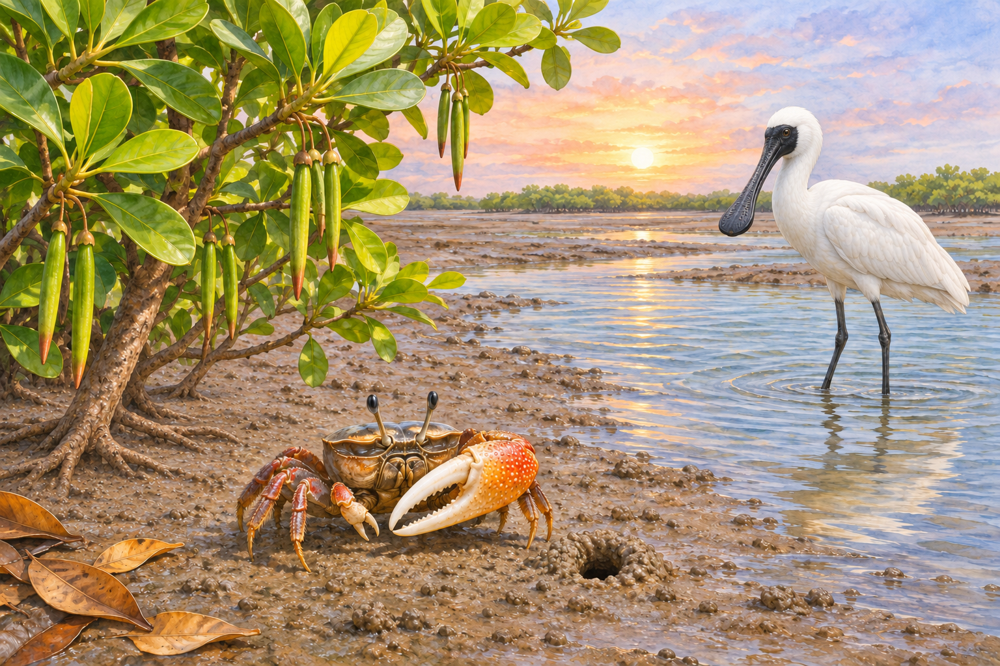

物質與能量
同樣放在室內，金屬為什麼摸起來更冷？
探索中

從高山到深海，選一種棲地，看看那裡的生物怎麼生活。
打開生態總圖已上線

移動月球，看看陽光如何形成月相，再挑一個月面主題深入探索。裝置不支援 3D 時，仍可操作平面月相圖。

點選場景中的水筆仔、招潮蟹與黑面琵鷺，對照真實照片，看看牠們如何生活。封面為 AI 示意。

從殺蟲、殺菌、除草的差別，到細菌製劑、抗藥性與整合管理，理解田裡的選擇如何連到餐桌。
從月壤中的氣體到背面的天線，看看月球的環境如何改變我們研究地球與宇宙的方式。
地球和月球之間，到底有多空？切換圖解比較大小與距離，再調整月球位置，看看一輪滿月是怎麼出現的。
主題分類
從月球到餐桌，記錄新學到的事。
月亮為什麼每天長得不一樣？
地月互動探索與故事 →✳02農藥是什麼？為什麼不能只問有沒有？
農藥殘留故事已開放 →同樣放在室內，金屬為什麼摸起來更冷？
探索中手機怎麼知道你在哪裡？
探索中一條河，怎麼改變一座城市？
探索中同一杯咖啡，為什麼在不同地方價格差這麼多？
探索中